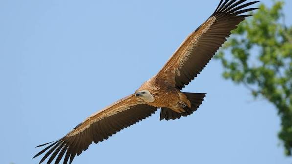

Vautours
des Monts
de Lacaune
>


⟹ Faune Sauvage Emblématique ⟸
Le vautour fauve avait pratiquement disparu du sud du Massif central au cours du XIXe siècle, victime du poison, des tirs et de la raréfaction du gibier sauvage. Il a fallu attendre le début des années 1980 pour qu'un programme de réintroduction, porté par le Parc national des Cévennes et la Ligue pour la protection des oiseaux, relâche les premiers couples sur les falaises de la Jonte, dans les Grands Causses aveyronnais.

Depuis cette réintroduction, la colonie des Grands Causses n'a cessé de croître, dépassant aujourd'hui plusieurs centaines de couples nicheurs. Les jeunes individus non reproducteurs, qui disposent d'un territoire de prospection pouvant atteindre 500 kilomètres, ont peu à peu étendu leur rayon d'action vers l'est, jusqu'aux Monts de Lacaune, distants d'à peine une cinquantaine de kilomètres à vol d'oiseau.
Les premières observations tarnaises, encore anecdotiques, remontent à une douzaine ou une quinzaine d'années. C'est surtout depuis le milieu des années 2010 que les survols sont devenus quasi quotidiens au printemps et en été au-dessus de Murat-sur-Vèbre, Barre et Lacaune, portés par les courants ascendants qui leur permettent de couvrir de grandes distances sans effort.
Cette présence grandissante n'est pas sans susciter des tensions : la découverte de dépouilles d'animaux domestiques et les scènes de curée impressionnent certains éleveurs, même si le vautour, strictement nécrophage, ne s'attaque jamais à un animal vivant.
Empoisonnement : l'ingestion de carcasses traitées ou d'appâts empoisonnés reste la première cause de mortalité non naturelle chez les vautours.
Collisions : lignes électriques et éoliennes constituent un risque croissant à mesure que l'espèce étend son territoire de vol.
Dérangement : l'approche des colonies de nidification en période de reproduction peut provoquer l'abandon des nids.
Dépendance alimentaire : la survie des jeunes populations reste liée à la disponibilité des placettes d'équarrissage aménagées par les éleveurs.
Les vautours des Monts de Lacaune se laissent surtout voir en vol, entre mars et septembre, lorsque les courants thermiques sont les plus favorables.
Murat-sur-Vèbre secteur où les survols quasi quotidiens sont signalés depuis une dizaine d'années par la Ligue pour la protection des oiseaux du Tarn.
Barre et Lacaune points hauts du massif où les rapaces sont régulièrement observés en fin de matinée et en début d'après-midi.
Crêtes et estives les prairies d'altitude offrent les meilleurs dégagements pour suivre les oiseaux à la jumelle sans les déranger.
Grands Causses aveyronnais à une cinquantaine de kilomètres, le berceau de la réintroduction reste le site d'observation le plus spectaculaire de la région.